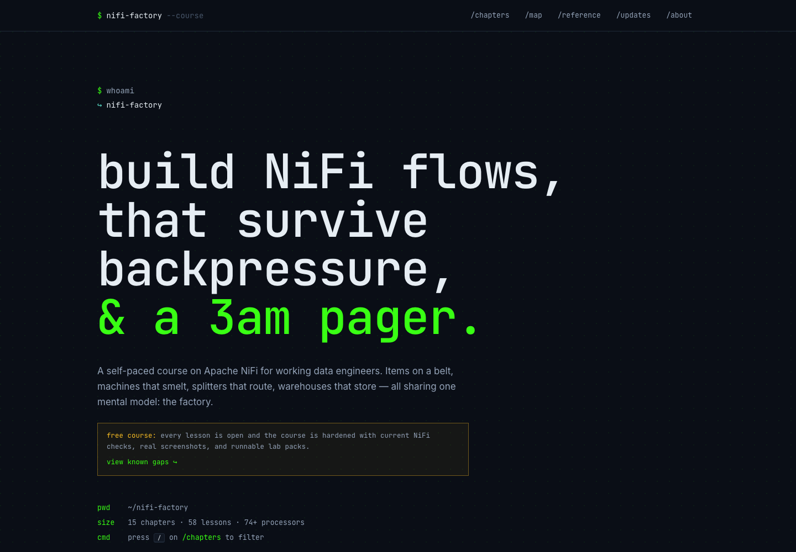
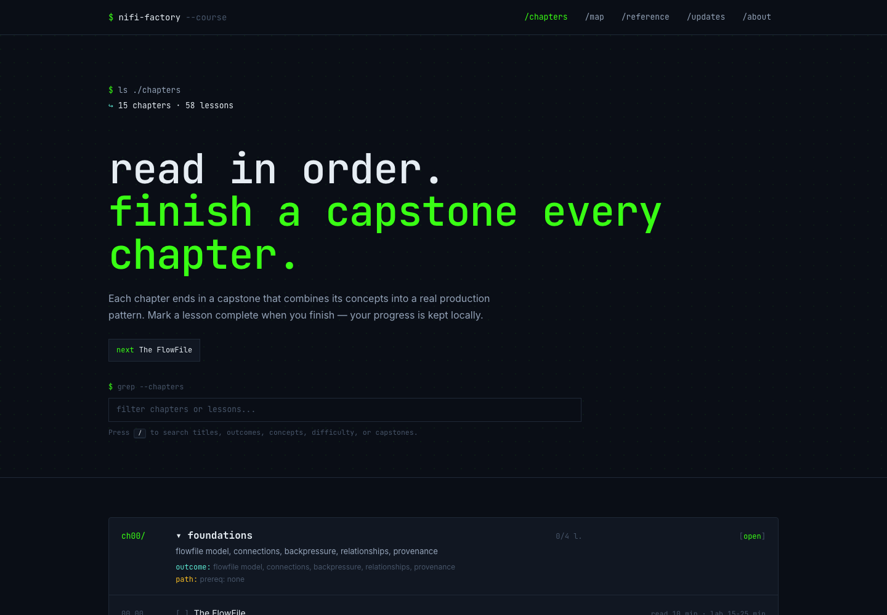
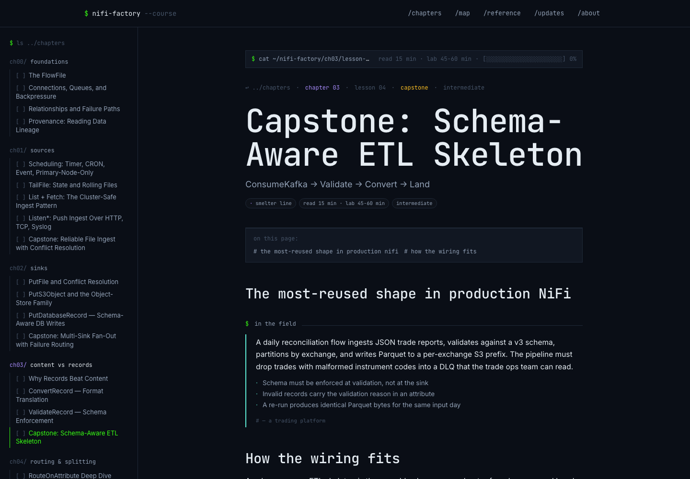
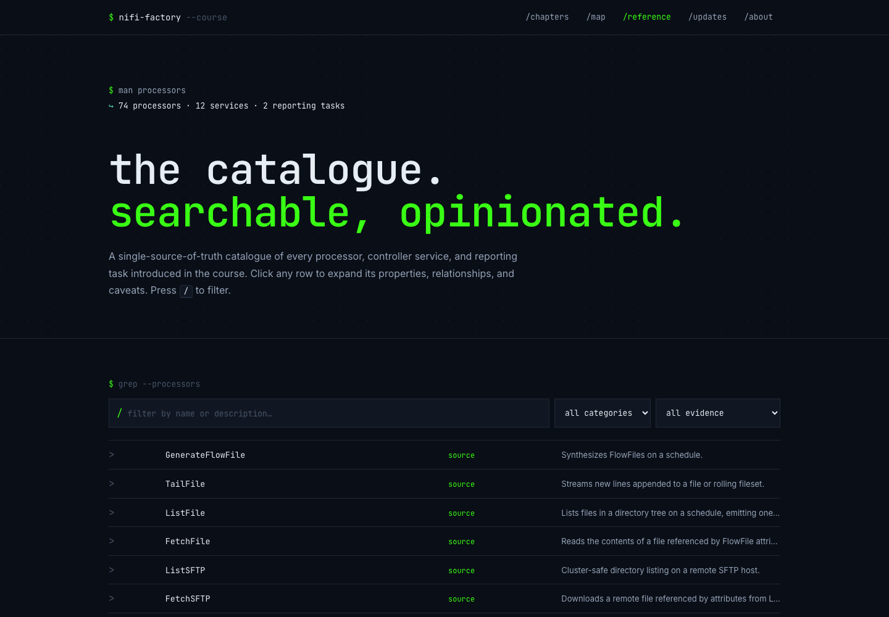

Pick a chapter
Start with foundations or jump into records, routing, sources, sinks, APIs, Kafka, reliability, platform operations, or security.
Production-pattern lessons, learner-safe labs, and review rubrics for NiFi flows that are clear, testable, and ready for real workloads.

NiFi Factory pairs concise lessons with capstone-style practice. The course emphasizes routing, records, backpressure, failure lanes, controller services, and the signals you need to know a flow is production-ready.
Start with foundations or jump into records, routing, sources, sinks, APIs, Kafka, reliability, platform operations, or security.
Read the processor choices, relationship wiring, and failure boundaries behind the production pattern.
Use learner-safe fixtures, expected outputs, and lab notes to practice the flow without private infrastructure.
Compare outputs against the rubrics so the design is clear, repeatable, and ready for team review.
Real screenshots from the live site, included here for reference.



It is a static GitHub landing page for the official site.